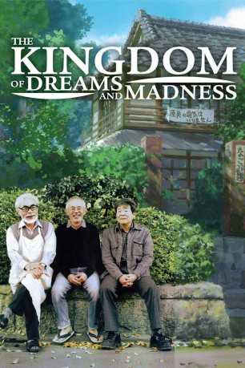

IMDB-Wertung: 7.8 / 10
IMDB-Wertung: 7.8 / 10  Metascore:
Metascore: 
Wer Hayao Miyazaki bei der Arbeit schon immer mal über die Schulter schauen wollte, bekommt mit der Dokumentation "The Kingdom of Dreams and Madness" die einmalige Gelegenheit dazu.
 IMDB-Wertung: 7.8 / 10 Metascore:
Wer Hayao Miyazaki bei der Arbeit schon immer mal über die Schulter schauen wollte, bekommt mit der Dokumentation "The Kingdom of Dreams and Madness" die einmalige Gelegenheit dazu.
Jahr: 2013
Dauer: 117 Minuten
FSK: 0
Land: Japan Studio: UFATonspuren:
Untertitel: Deutsch,
Auflösung: 720p (1280x720) Größe: 3614 MB
Genre: Dokumentation
Regisseur: Mami Sunada
Drehbuch: Budd Schulberg
Soundtrack:
Darsteller:
Datei: X:\Dokumentationen\Dokus(A-Z)\Kingdom of Dreams and Madness, The (2013, FSK0, 1280x720).mkv seit 16.06.2016
Festplatte: HD Serien(SU-Z)+Dokus+Musik
 Es gibt insgesamt 34 Filme in der Gruppe 'Dokumentationen\Dokus(A-Z)'
Es gibt insgesamt 34 Filme in der Gruppe 'Dokumentationen\Dokus(A-Z)'